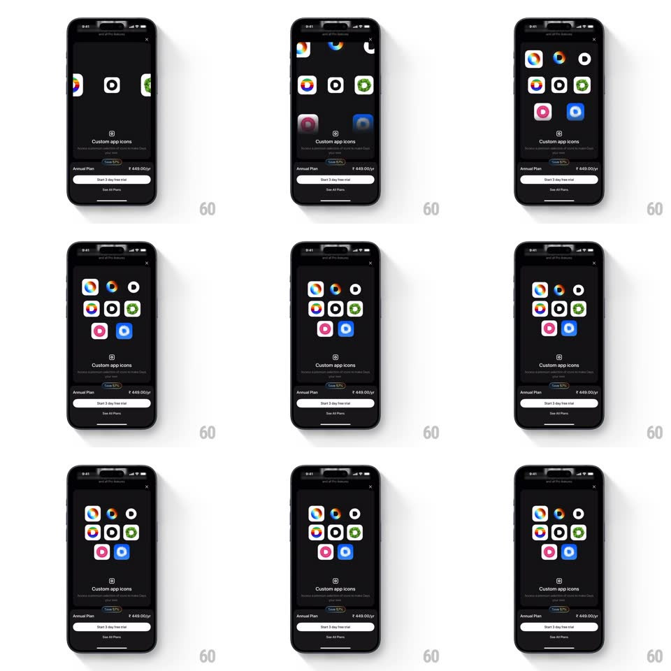

Media
Frame-by-frame

Rebuild this interaction 1:1: the Days paywall's custom-icon showcase - starting from a single app icon, alternate icon designs spring in one by one with a staggered scale-in, filling a loose 3x3 grid of colorful icon options above the "Custom app icons" pitch and the annual plan card.

Rebuild this interaction 1:1: the Days paywall's custom-icon showcase - starting from a single app icon, alternate icon designs spring in one by one with a staggered scale-in, filling a loose 3x3 grid of colorful icon options above the "Custom app icons" pitch and the annual plan card. ## Integration Integration: stack-agnostic spec - springs given as stiffness/damping, timed motions as duration + curve; map every value to your framework and animation library of choice. ## Scene Dark paywall: close X top-right, a grid area for the icons, "Custom app icons" heading with a subline, "Save 53%" pill, Annual Plan ₹449.00/yr row, and a "Start 3 day free trial" button. ## Motion spec Pattern: staggered spring grid reveal. - One default icon sits center; the first alternates pop in at its left and right (scale 0 -> 1.2 -> 1, spring ~320/16, 350ms, 120ms apart). - The grid builds outward row by row - each new icon springs in (same spring, ~70ms stagger) until 8-9 icons fill the 3x3 arrangement. - Each icon gives a small settle wobble (rotate +/-4deg, 200ms) after landing. - Below the grid, the heading, plan card, and CTA are static throughout. ## Calibration - Springs are bouncy (damping ~16) - icons visibly overshoot. - The stagger radiates from the center icon outward, not left-to-right. ## Reduced motion Icons fade in at full size (200ms, staggered 60ms). ## Don't miss - The icons are genuinely different designs (camera-glyph variants in color, mono, gradient) - the variety is the pitch. - The grid never scrolls - everything fits at once.